Google OAuth 申請、Gmail 應用程式密碼與 OAuth2 Proxy Zero Trust 實作
前言
在 Zero Trust 持續被討論的這幾年，我自己過去其實比較常直接使用 Cloudflare Zero Trust 或 VPN，很少從零自建整套驗證入口。不過當部署環境的網路條件比較嚴格時，VPN 不一定總是可行，這時候把驗證邏輯收斂到 HTTP 入口，通常會更容易落地。
OAuth2 Proxy 就是很適合這種場景的元件。它可以站在應用程式前面，接手登入、驗證與使用者識別，再把已經通過驗證的請求轉交給後端服務。本文以 Google 當成 OAuth 提供者，在 Linux 上結合 Nginx，示範如何建立一套簡單實用的 Zero Trust 存取入口，並補上 Gmail SMTP 需要的 Google 應用程式密碼設定方式。
Google 帳號前置條件與差異
在開始之前，先把兩件常被混在一起的設定拆開：
Google OAuth Client ID / Client Secret：這是給 OAuth2 Proxy 或網站登入流程用的，必須在 Google Cloud Console 建立。Google 應用程式密碼：這是給 Gmail SMTP、舊版郵件客戶端、掃描器或只接受帳號密碼的程式用的 16 位密碼，不是 OAuth 的Client Secret。
如果你的需求同時包含「網站登入」與「Gmail SMTP 寄信」，通常兩者都要準備：
- 在 Google Cloud Console 建立 OAuth 憑證，給 OAuth2 Proxy 使用。
- 在 Google 帳號安全性設定中開啟兩步驟驗證，之後另外產生 Gmail SMTP 專用的應用程式密碼。
如果你用的是公司或學校的 Google Workspace 帳號，要先注意兩件事：
- Google 官方目前建議第三方郵件客戶端優先改用 OAuth。
- 即使已開啟兩步驟驗證，
應用程式密碼也可能因為管理員政策、只允許安全金鑰，或 Advanced Protection 而不顯示。
架構概念
這篇文章採用的是「Nginx 在最前面，OAuth2 Proxy 負責驗證，後端應用只接收已驗證流量」的做法。
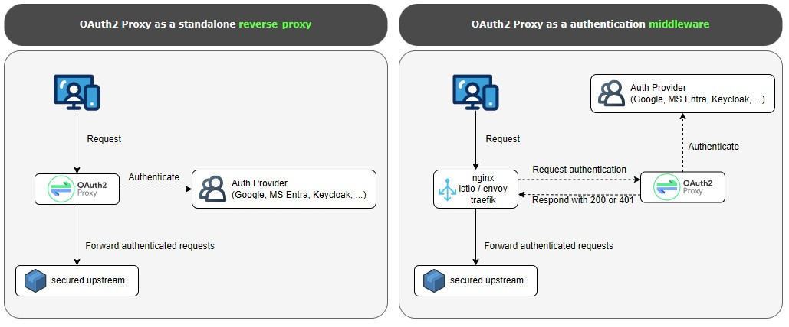
整體流程如下：
- 使用者先連到受保護的網站。
- Nginx 先將請求送到 OAuth2 Proxy 做驗證。
- 如果尚未登入，OAuth2 Proxy 會將使用者導向 Google 登入頁。
- 使用者完成登入與授權後，Google 會把瀏覽器導回
/oauth2/callback。 - OAuth2 Proxy 建立登入 Session，並將請求交回 Nginx。
- Nginx 再把請求轉送到真正的後端服務。
這種做法的好處是，後端應用程式本身不需要處理 OAuth 流程，只要信任來自反向代理層的使用者資訊即可。
前置設定
本文使用 Google 作為 OAuth 提供者，因此第一步要先在 Google Cloud Console 建立 OAuth 用戶端。這一段處理的是「登入授權」，不是 Gmail SMTP 的應用程式密碼。
先前往 Google Cloud 建立專案，建立一個新的專案，或直接使用現有專案。
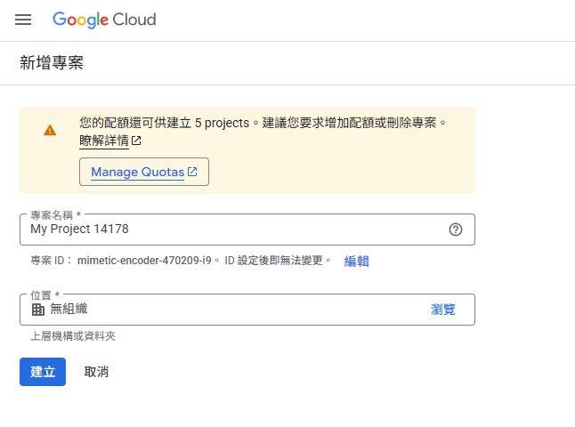
接著前往「API 和服務」中的「憑證」，選擇建立「OAuth 用戶端 ID」。
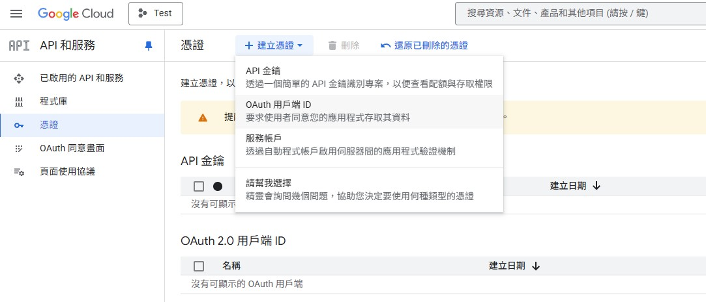
如果是第一次操作，畫面通常會先要求你設定「OAuth 同意畫面」。這一步要先完成，後面才有辦法建立 OAuth 用戶端。
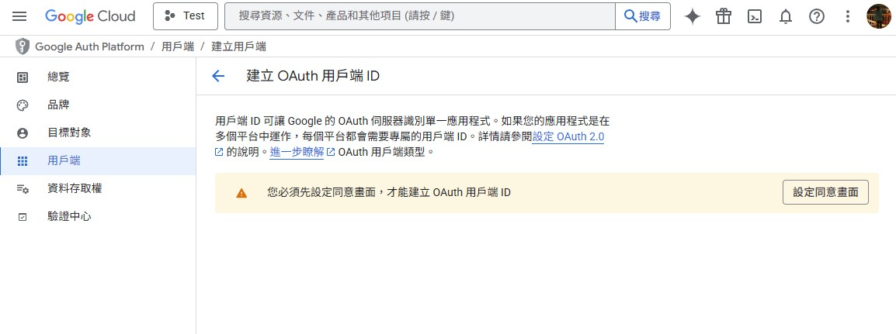
建立 OAuth 用戶端時，應用程式類型請選「網頁應用程式」。名稱可以自行決定，但重新導向 URI 必須填入你實際要保護的網域，並加上：
https://你的網域/oauth2/callback
如果你目前還在內網測試，也可以先用測試網域或反向代理入口的正式網址來配置。
這裡有兩個很重要，而且很容易填錯的規則：
1. JavaScript 來源只能填來源，不能帶路徑
「已授權的 JavaScript 來源」只能填網站來源本身，不能包含 callback path。
正確範例：
http://localhost:8080
錯誤範例：
http://localhost:8080/auth/google/callback
2. 重新導向 URI 必須填完整 callback 路徑
「已授權的重新導向 URI」必須填完整路徑，而且要和你程式中實際使用的 redirect_uri 完全一致。
正確範例：
http://localhost:8080/auth/google/callback
如果你的本機測試可能會在 127.0.0.1 與 localhost 之間切換，建議兩組都先加進去：
已授權的 JavaScript 來源：
http://localhost:8080
http://127.0.0.1:8080
已授權的重新導向 URI：
http://localhost:8080/auth/google/callback
http://127.0.0.1:8080/auth/google/callback
如果這裡少填其中一組，實際測試時很容易出現「看起來網址差不多，但 Google 不接受」的情況。
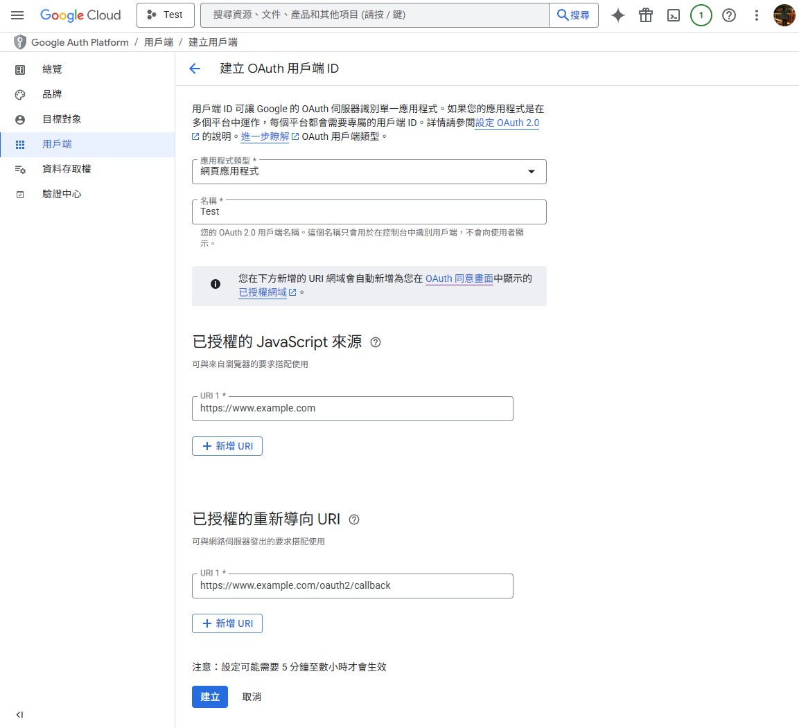
建立完成後，請記錄以下資訊，後面設定 OAuth2 Proxy 時會用到：
Client IDClient Secret
你也可以直接下載 JSON 留存，但本文後續示範會直接把必要欄位寫進設定檔。
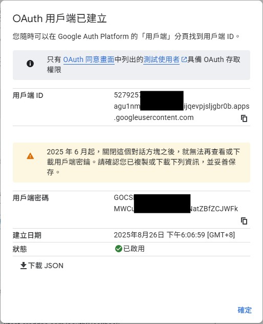
Gmail SMTP 的 Google 應用程式密碼
如果你的系統除了要做 Google OAuth 登入，還需要透過 Gmail SMTP 寄信，這裡要再做第二組設定。這組密碼是給 SMTP 驗證用，不是前面 Google Cloud Console 建出來的 Client Secret。
1. 先開啟兩步驟驗證
Google 官方要求只有已開啟兩步驟驗證的帳號，才能建立應用程式密碼。若尚未開啟，先到 Google 帳戶的「安全性」頁面完成設定。
2. 進入應用程式密碼頁面
目前介面比以前藏得更深，實務上有三種進法：
- 直接開啟
https://myaccount.google.com/apppasswords。 - 進入 Google 帳戶管理頁後，如果上方有搜尋欄，直接搜尋「應用程式密碼」。
- 手動走
安全性->兩步驟驗證，然後往頁面下方找應用程式密碼。
如果你明明已開啟兩步驟驗證，卻還是看不到這個入口，常見原因有：
- 帳號只允許使用安全金鑰做兩步驟驗證。
- 你使用的是公司、學校或其他受管理的 Google Workspace 帳號。
- 帳號已啟用 Advanced Protection。
3. 建立 SMTP 專用密碼
建立時可以選 Mail / 其他自訂名稱。若你的程式是後端服務，建議名稱直接寫成服務名，例如：
my-api-gmail-smtp
建立完成後，Google 會顯示一組 16 位密碼。這組密碼只會顯示一次，請立即保存到你的密碼管理工具或部署環境變數。
4. Gmail SMTP 連線參數
常見設定如下：
SMTP Host: smtp.gmail.com
SMTP Port: 587
Security: STARTTLS / TLS
Username: 你的完整 Gmail 位址
Password: 剛剛產生的 Google 應用程式密碼
如果你的程式要求 SSL 直連，也可改用：
SMTP Host: smtp.gmail.com
SMTP Port: 465
Security: SSL
Username: 你的完整 Gmail 位址
Password: 剛剛產生的 Google 應用程式密碼
這裡有三個容易填錯的點：
SMTP Password要填應用程式密碼，不是平常登入 Google 的主密碼。SMTP Password也不是前面 OAuth 用的Client Secret。- 如果你的郵件元件支援
Sign in with Google或完整 OAuth，優先改用 OAuth，安全性會比應用程式密碼更高。
5. 最小可用範例
如果你的程式只接受帳號密碼登入 SMTP，環境變數通常會長這樣：
export SMTP_HOST="smtp.gmail.com"
export SMTP_PORT="587"
export SMTP_USERNAME="you@gmail.com"
export SMTP_PASSWORD="你的16位應用程式密碼"
實際送信成功後，再把這組設定帶回你的應用程式或部署系統即可。
建立環境
接下來在 Linux 主機上安裝 Nginx 與 OAuth2 Proxy。以下範例以 Debian 或 Ubuntu 系列環境為主。
1. 安裝 Nginx
sudo apt-get update
sudo apt-get install -y nginx nginx-extras
安裝完成後，可以先確認 Nginx 服務狀態：
sudo systemctl status nginx
如果只是先確認服務有沒有起來，也可以直接測試設定檔是否有效：
sudo nginx -t
2. 下載 OAuth2 Proxy
前往 OAuth2 Proxy 的 Releases 頁面 找你要使用的版本。本文範例沿用原文版本 v7.12.0，實際部署前請自行確認你要的版本號。
cd /tmp
sudo wget https://github.com/oauth2-proxy/oauth2-proxy/releases/download/v7.12.0/oauth2-proxy-v7.12.0.linux-amd64.tar.gz
sudo tar zxvf oauth2-proxy-v7.12.0.linux-amd64.tar.gz
解壓縮後會得到一個 oauth2-proxy-v7.12.0.linux-amd64 目錄，裡面包含可執行檔 oauth2-proxy。
3. 安置可執行檔
原文習慣把執行檔移到 /etc/，這裡保留同樣做法。如果你偏好更標準的路徑，也可以放到 /usr/local/bin/。
cd /tmp/oauth2-proxy-v7.12.0.linux-amd64
sudo mv oauth2-proxy /etc/oauth2-proxy
sudo chmod +x /etc/oauth2-proxy
確認版本：
/etc/oauth2-proxy --version
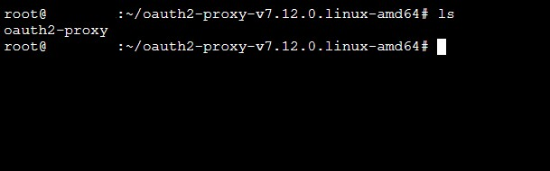
設定 OAuth2 Proxy
接著建立 OAuth2 Proxy 需要的設定目錄與檔案。這裡使用 /var/auth 作為工作目錄。
1. 建立設定目錄
sudo mkdir -p /var/auth
cd /var/auth
2. 建立 run.cfg
建立 run.cfg，內容如下：
http_address = "127.0.0.1:4180"
reverse_proxy = true
upstreams = ["http://127.0.0.1:80/"]
pass_basic_auth = true
pass_user_headers = true
pass_host_header = true
set_xauthrequest = true
client_id = "YOUR_CLIENT_ID.apps.googleusercontent.com"
client_secret = "YOUR_CLIENT_SECRET"
scope = "openid email profile"
pass_access_token = false
authenticated_emails_file = "/var/auth/email.txt"
cookie_name = "_oauth2_proxy"
cookie_secret = "YOUR_COOKIE_SECRET"
cookie_expire = "2h"
cookie_refresh = "1h"
cookie_secure = true
這幾個欄位最重要：
client_id與client_secret：直接填入剛剛在 Google Cloud 建立的憑證。authenticated_emails_file：允許登入的 Email 白名單。cookie_secret：用來保護 Cookie，必須自行產生。cookie_secure = true：表示只透過 HTTPS 傳送 Cookie，正式環境應維持開啟。
3. 產生 cookie_secret
可以用下面這個指令產生一組隨機字串：
dd if=/dev/urandom bs=32 count=1 2>/dev/null | base64 | tr -d '\n' | tr '+/' '-_' ; echo
將輸出結果貼進 cookie_secret。
4. 建立允許登入的 Email 白名單
建立 email.txt，每行放一個允許通過的 Email，例如：
alice@example.com
bob@example.com
這樣 OAuth2 Proxy 驗證成功後，只有在白名單中的帳號會被放行。
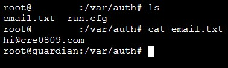
5. 建議先本地檢查設定檔
在正式掛成背景服務前，先用前景模式測一次，最容易看錯誤訊息：
sudo /etc/oauth2-proxy --config=/var/auth/run.cfg
如果設定沒問題，通常會看到服務啟動並監聽在 127.0.0.1:4180。這一步確認完成後，再按 Ctrl+C 停掉，繼續做 systemd 設定。
設定背景服務
接著把 OAuth2 Proxy 掛成 systemd 服務，讓它能開機自動啟動，也比較方便查看狀態與日誌。
1. 建立 service 檔
在 /etc/systemd/system 建立 oauth2proxy.service：
cd /etc/systemd/system
sudo vim oauth2proxy.service
貼上以下內容：
[Unit]
Description=Oauth2-Proxy Daemon Service
After=network.target network-online.target nss-lookup.target basic.target
Wants=network-online.target nss-lookup.target
[Service]
Type=simple
ExecStart=/etc/oauth2-proxy --config=/var/auth/run.cfg
WorkingDirectory=/var/auth
Restart=on-failure
RestartSec=5s
[Install]
WantedBy=multi-user.target
2. 重新載入 systemd
sudo systemctl daemon-reload
3. 啟動並設定開機自動啟動
sudo systemctl start oauth2proxy
sudo systemctl enable oauth2proxy
4. 確認服務真的有起來
sudo systemctl status oauth2proxy
如果啟動失敗，可以立刻看日誌：
sudo journalctl -u oauth2proxy -n 100 --no-pager
若你正在調整設定檔，追即時日誌會更快：
sudo journalctl -u oauth2proxy -f
這一段建議一定要做，因為 client_id、client_secret、cookie_secret、白名單路徑只要任一處有誤，通常都會在這裡第一時間暴露。
設定 Nginx
OAuth2 Proxy 本身只負責驗證，所以還需要 Nginx 負責把外部流量收進來，並在轉送到後端前先做驗證。
1. 設定重點
這裡有三個關鍵位置：
/oauth2/：讓瀏覽器可以跟 OAuth2 Proxy 完成登入、登出與回呼流程。/oauth2/auth：給 Nginx 的auth_request子請求使用。/：真正受保護的應用入口，只有驗證成功才會被代理到後端。
2. 範例設定
請依你的網域名稱、SSL 憑證路徑與後端位址修改：
server {
listen 443 ssl;
listen [::]:443 ssl;
server_name www.example.com;
ssl_certificate /var/ssl/fullchain.pem;
ssl_certificate_key /var/ssl/privkey.pem;
server_tokens off;
more_set_headers Server;
location /oauth2/ {
proxy_pass http://127.0.0.1:4180;
proxy_set_header Host $host;
proxy_set_header X-Real-IP $remote_addr;
proxy_set_header X-Auth-Request-Redirect $scheme://$host$request_uri;
}
location = /oauth2/auth {
proxy_pass http://127.0.0.1:4180;
proxy_set_header Host $host;
proxy_set_header X-Real-IP $remote_addr;
proxy_set_header X-Forwarded-Uri $request_uri;
proxy_set_header Content-Length "";
proxy_pass_request_body off;
}
location = /oauth2/sign_out {
proxy_pass http://127.0.0.1:4180;
proxy_set_header Host $host;
proxy_set_header X-Real-IP $remote_addr;
proxy_set_header X-Forwarded-Uri $request_uri;
}
location / {
auth_request /oauth2/auth;
error_page 401 =403 /oauth2/sign_in;
auth_request_set $user $upstream_http_x_auth_request_user;
auth_request_set $email $upstream_http_x_auth_request_email;
auth_request_set $token $upstream_http_x_auth_request_access_token;
auth_request_set $auth_cookie $upstream_http_set_cookie;
proxy_set_header X-User $user;
proxy_set_header X-Email $email;
proxy_set_header X-Access-Token $token;
add_header Set-Cookie $auth_cookie;
proxy_set_header Host $host;
proxy_set_header X-Real-IP $remote_addr;
proxy_set_header X-Forwarded-Uri $request_uri;
proxy_pass http://192.168.1.2:80;
}
}
3. 套用前先驗證設定
每次修改完 Nginx 設定，都先做語法檢查：
sudo nginx -t
確認沒問題後再重新載入：
sudo systemctl restart nginx
如果 Nginx 重啟失敗，可以直接看最近錯誤：
sudo journalctl -u nginx -n 100 --no-pager
4. 常見調整點
- 後端應用如果本身也要知道使用者身份，可以直接讀
X-User與X-Email。 - 如果你的服務是跑在不同 port，請修改
proxy_pass http://192.168.1.2:80;。 - 如果你是反向代理多個站點，建議每個站點各自維護一組對應的 Nginx server block。
- 正式環境務必使用 HTTPS，否則
cookie_secure = true會造成 Cookie 無法正常工作。
查看成果
設定完成後，打開你的網站，第一次進入時應該會先看到 OAuth2 Proxy 的登入畫面。
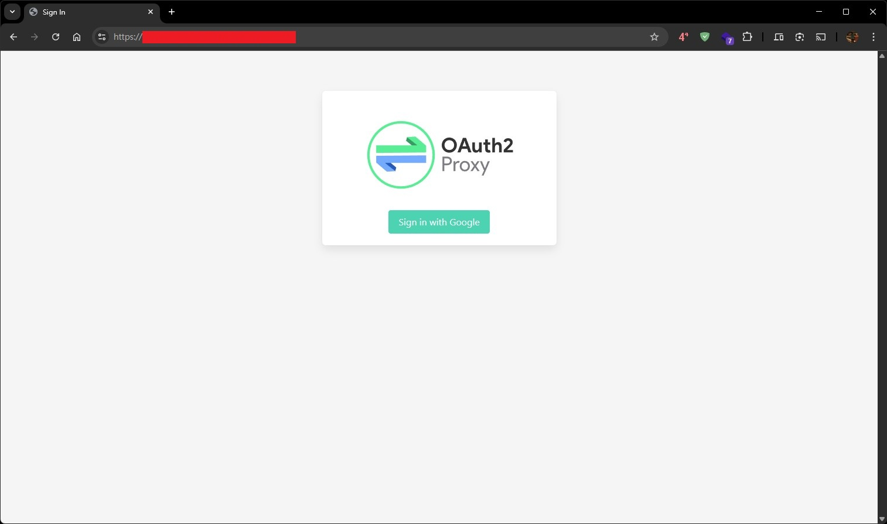
點下登入之後，瀏覽器會被導向 Google 的登入與授權頁面。
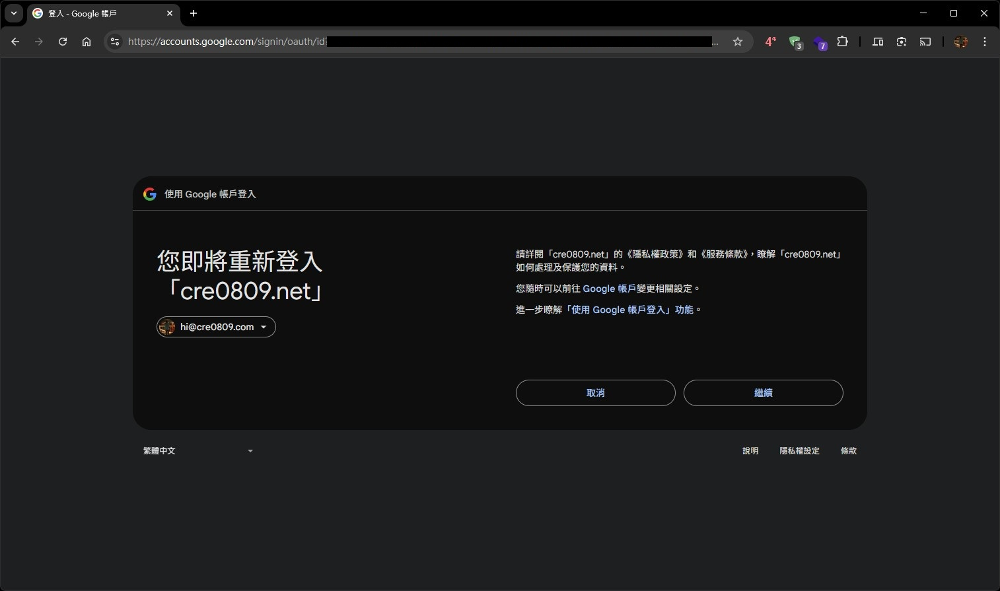
當驗證成功並回到原站後，你的應用程式才會真正出現。原文範例的後端是一個 AdGuard Home 頁面。
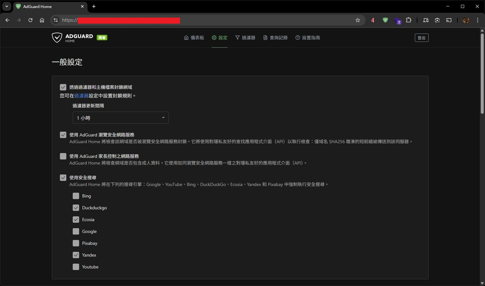
驗證流程建議
如果你想更有系統地確認整套流程有成功，可以照下面順序檢查：
systemctl status oauth2proxy確認 OAuth2 Proxy 服務正常。systemctl status nginx確認 Nginx 正常。curl -I https://你的網域/oauth2/sign_in確認 OAuth2 Proxy 入口能回應。- 用瀏覽器開啟受保護頁面，確認會先跳轉登入。
- 使用白名單中的 Google 帳號登入，確認可成功回到應用頁面。
- 改用不在
email.txt的帳號重試，確認應該被拒絕。
常見問題
登入後一直回到登入頁
通常先檢查這幾個地方：
- Google Cloud 的重新導向 URI 是否與實際網址完全一致。
cookie_secret是否正確。- 站點是否真的走 HTTPS。
cookie_secure = true的情況下，是否誤用 HTTP 進行測試。
看不到 Google 應用程式密碼入口
先依序檢查：
- 兩步驟驗證是否真的已開啟。
- 這個帳號是否是公司或學校帳號，且管理員禁用了 App Passwords。
- 兩步驟驗證是否只設定安全金鑰。
- 帳號是否啟用了 Advanced Protection。
如果你是 Google Workspace 帳號，且要給第三方客戶端或裝置連 Gmail，Google 官方目前優先建議改用 OAuth。
OAuth2 Proxy 起不來
優先看：
sudo journalctl -u oauth2proxy -n 100 --no-pager
最常見是設定檔路徑錯、白名單檔案不存在，或 client_secret 填錯。
Nginx 驗證一直失敗
先確認：
location = /oauth2/auth是否存在。auth_request /oauth2/auth;是否寫對。proxy_pass是否真的指向127.0.0.1:4180。nginx -t是否通過。